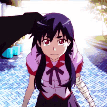
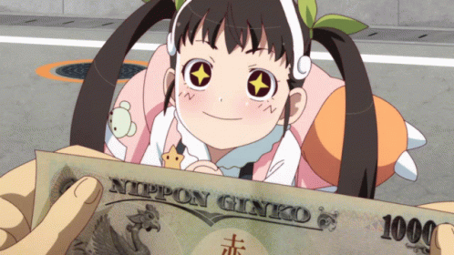

|
Kaiki Deishuu |
Money Beef |
“Humans have a desire for truth or they have a desire to what they know is the truth. In other words, what the truth is
exactly second to that. Be careful of what is the truth and what is lie. In other words, always doubt yourself. Harbor
an inner devil as you read along… and I won’t forget to add that by that point, you might have already fallen into my
trap.” |
 |
Hitagi Senjougahara |
Weight Crab |
“Did you know every time you sigh, a little bit of happiness escapes?” |
|  |
Kanbaru Suruga |
Rainy Devil |
“I'm Kanbaru Suruga. Currently employed as Araragi's love slave.” |
 |
Oshino Meme |
Hawaian Shirt |
“People have to save themselves. One person saving another is impossible.” |
|  |
Hachikuji Mayoi |
Lost Snail |
“I know love. The convenience store was selling it. For 298 yen.” |